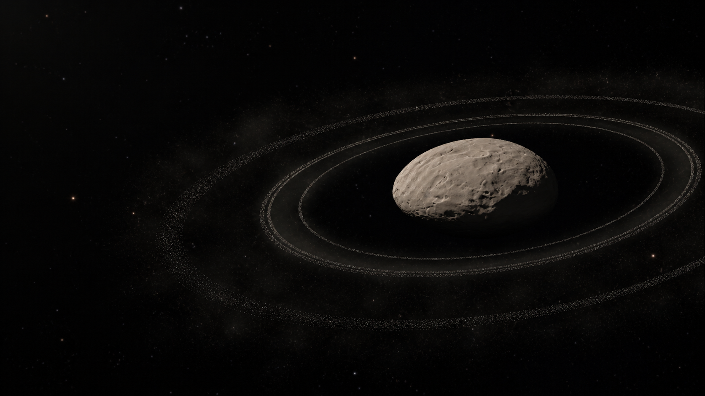
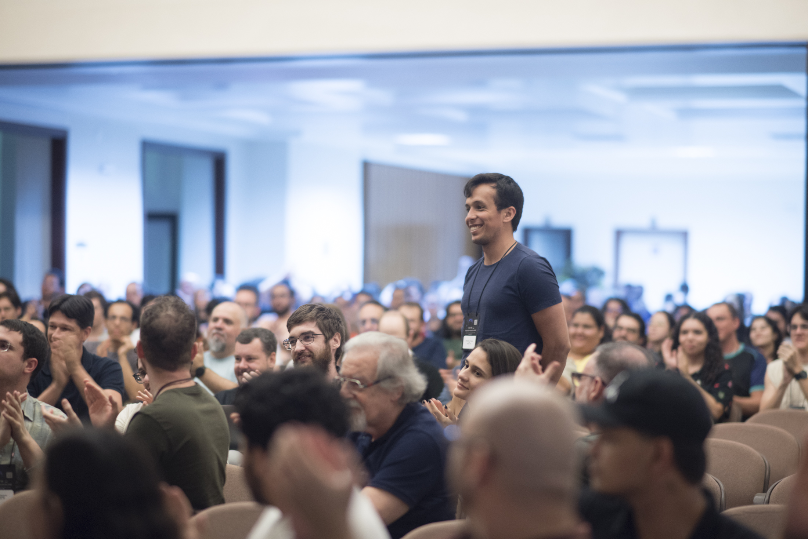

Pós-doutorado em Astronomia
Observatório Nacional · Bolsa Nota 10 FAPERJ

Astrônomo · Astrofísica do Sistema Solar
I investigate distant small bodies and its rings using the precise instant when they occult a background star.
Explore my research01 / ABOUT ME
I am a Brazilian astronomer and postdoctoral researcher at the Observatório Nacional in Rio de Janeiro, Brazil. My research focuses on stellar occultations by Centaurs and trans-Neptunian objects, combining observational campaigns, photometric analysis, and light-curve modelling to investigate the physical properties of small Solar System bodies and their surroundings. I hold a PhD in Astronomy from the Observatório Nacional, an MSc in Astronomy and Physics from Tecnological Federal University - Paraná (UTFPR-CT), Brazil, and a BSc in Physics from Ponta Grossa State University (UEPG), Brazil.
I have led international studies on ring systems around small bodies, including the discovery of Quaoar's second ring and the first observation of the evolving ring system around Chiron. My doctoral research received an honourable mention from the Brazilian Astronomical Society (SAB), and I was awarded the FAPERJ Nota 10 fellowship. In recognition of my contributions to planetary astronomy, the International Astronomical Union named asteroid (20276) Chrystianpereira in my honour.

2 / RESEARCH
Em desenvolvimento
I am preparing a more complete view of the projects, methods and data behind my work.
03 / PUBLICATIONS
Braga-Ribas, F.; Pereira, C. L.; et al. · The Astrophysical Journal Letters
Pereira, C. L.; Braga-Ribas, F.; Sicardy, B.; et al. · The Astrophysical Journal Letters
Pereira, C. L.; Braga-Ribas, F.; Sicardy, B.; et al. · Philosophical Transactions A
Morgado, B. E.; et al.; Pereira, C. L. · Nature
Pereira, C. L.; Sicardy, B.; Morgado, B. E.; et al. · Astronomy & Astrophysics
Pereira, C. L.; Braga-Ribas, F.; Sicardy, B.; et al. · MNRAS
04 / TRAJETÓRIA
Observatório Nacional · Bolsa Nota 10 FAPERJ
Observatório Nacional · Tese com menção honrosa pela Sociedade Astronômica Brasileira
Universidade Tecnológica Federal do Paraná
Universidade Estadual de Ponta Grossa
05 / DESTAQUES
Em desenvolvimento